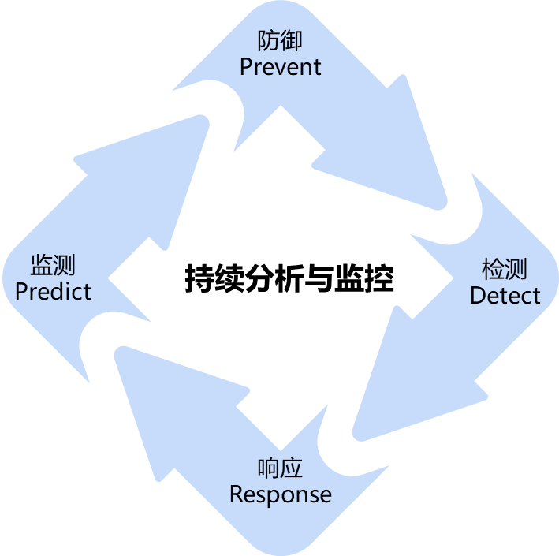
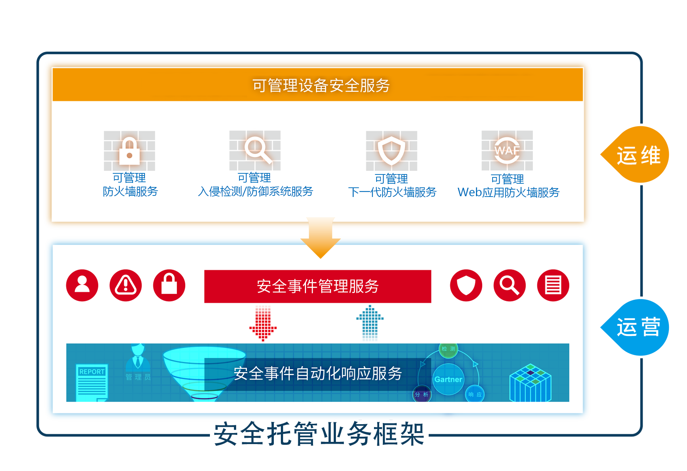
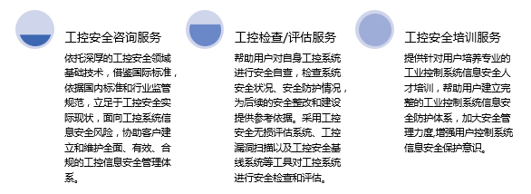
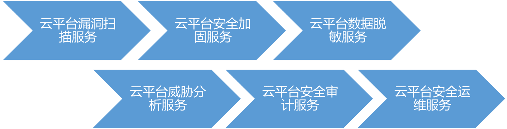
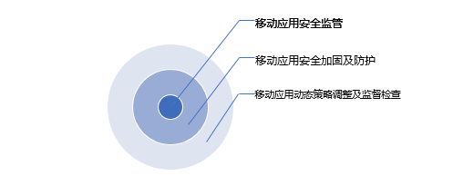
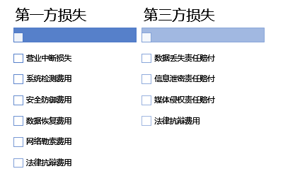

赛博特安安全运营中心面向全国，针对智慧城市建设中的城市云、数据中心、关键信息基础设施及其他政府机构和中小企业提供安全运营中心建设及安全运营服务。中心业务包括七大类，即：基于生命周期的安全业务/安全托管业务/基于新兴技术和创新模式的安全业务/培训类安全业务/场景类安全业务/设备租赁类业务和咨询顾问类业务。
◆基于生命周期的安全业务
基于Gartner自适应安全架构的生命周期运营服务，为用户提供一个具备强适应性的智能安全防护体系及全方位闭环安全服务。

★预测
资产发现服务：提供网络侧暴露资产的探测和全生命周期管理及对未知资产的首次发现进行脆弱性标记的服务，资产类型包括主机、网络设备、安全设备、数据库、中间件、应用组件等。
威胁情报服务：提供基于用户网络原始日志和网络空间威胁情报收集、分析的安全服务，利用机器学习对安全攻击进行溯源，帮助用户发现隐蔽的安全攻击。
漏洞探测服务：提供对指定的远程或者本地计算机系统进行安全脆弱性检测的漏洞探测服务，并输出专业的漏洞探测报告，提供报告的解读。
风险评估服务：提供业务系统安全风险排查的风险评估服务，并从技术角度分析出业务中存在的安全问题，指导客户进行加固和修复。
预警通告服务：提供常见厂商的软、硬件网络设备、操作系统、数据库软件、Web软件等最新的安全问题及威胁（0day、系统漏洞、网络攻击）的预警通告服务。
★防御
应用层安全防护服务：提供对网站或APP的业务流量进行恶意特征识别及防护的应用层安全防护服务，避免网站服务器被恶意入侵，保障业务的核心数据安全，解决因恶意攻击导致的服务器性能异常问题。
策略配置优化服务：提供利用0day和1day的高级威胁与定向攻击，依托专业团队的高级分析能力，沿用安全预警工作成效，对客户安全设备（IPS、WAF、UTM、NGFW等）进行配置调整的优化服务。
安全加固服务：提供对客户主机操作系统进行全方位的基线加固和组件升级、修补系统潜在的各种高危漏洞、解决系统中隐藏的安全威胁的安全加固服务。
流量清洗服务：提供的流量清洗服务，实现“本地+云端”的分层DDoS防御，针对60多种网络流量进行抽象建模，可以实现T级防护，秒级响应和超百种攻击的全面防御。
★检测
安全基线检查服务：为满足安全规范要求，提供直接反映系统自身安全脆弱性的安全配置检查服务，包括账号配置安全、口令配置安全、授权配置、日志配置、IP 通信配置等配置检查。
行为安全审计服务：通过搜集不同设备日志及用户操作行为，运用特定算法分析基于实际不同的安全场景的多维度用户行为是否异常，并提供及时告警信息的行为安全审计服务。
设备安全分析服务：提供各类安全设备产生的事件分析的设备安全分析服务，通过收集入侵防御系统、下一代防火墙、Web应用防火墙、抗DDOS、邮件网关等防护设备日志，定期分析并筛选有价值安全事件，并通知用户。
恶意文件分析服务：基于在线沙箱和人工文件分析，对恶意文件（可提交文件的基本信息、危险行为、文件操作、注册表操作、进程操作、网络访问等）的行为进行分析。
全面威胁分析服务：持续对用户责任网络空间范围内存在的威胁事件进行全面分析，并在监测到安全事件或威胁行为后即时通告用户，指导用户调整安全配置及阻断威胁行为。
★响应
响应分析服务：提供安全事件及黑客入侵事件的处理服务，能够帮助用户正确应对安全事件及黑客入侵，清理木马后门、分析原因，降低安全事件带来的损失，帮助客户快速恢复业务。
事件处置服务：提供针对安全漏洞、安全威胁（0day、APT、病毒爆发、网络攻击等）的解决方法、安全风险说明及对响应的安全事件进行处置的服务。
响应优化服务：提供发现日常入侵行为后及时优化安全设备的防护策略并提供应用系统安全加固建议，及时优化响应流程和事件处置流程的响应优化服务。
◆安全托管业务
针对中小企业提供安全托管业务（Managed Security Services, MSS），基于用户需求，通过赛博特安-安全运营中心，结合安全专家、运营流程、创新技术和产品为用户提供7x24小时的安全运营服务，帮助用户构建安全运营体系，以服务的形式交付整体的安全运营结果，为用户安全赋能。

★可管理安全设备服务
基于安全运维的角度，根据用户安全设备的运维需求，结合赛博特安多年的安全运维服务经验，运用创新技术和工具对安全设备（防火墙、下一代防火墙、Web应用防火墙、入侵检测/防御系统）进行统一运维管理，以服务的形式向用户交付安全运维结果。
性能/安全监控：对安全设备进行7*24小时全天候性能和安全监控，对于异常状况及时预警，确保设备安全、稳定地运行。
配置管理：提供标准流程化的配置管理服务，包括配置自动备份、配置变更、配置优化、配置核查等，帮助客户更好地管理安全设备。
病毒库/特征库升级：提供标准流程化的规则库/病毒库升级服务，确保安全设备对新型威胁的检测/防御能力。
安全报告：每月自动化生成一份安全月度分析报告，统计和分析当前月的性能事件和安全事件，帮助用户全面了解设备的性能及安全状况，为用户的安全运维管理提供依据。
★安全事件管理服务
对用户安全设备、操作系统、应用系统的日志进行统一采集和存储，通过大数据分析、威胁建模、智能关联、威胁情报等技术，对海量日志进行分析，实时发现用户所面临的安全威胁，进行安全预警，并结合知识库提供处理建议，协助用户响应和处置安全事件，保障用户业务安全。
安全监测：提供7*24小时全天候、全方位的安全监测服务，对于异常状况及时预警，保障用户网络和系统安全。
安全预警：对于检测到的网络威胁事件，会在30分钟内通过邮件、微信、电话的方式通知用户，并提供详尽的攻击信息。
知识库关联：安全告警通知自动关联知识库，提供针对性的告警处置建议，协助用户快速有效地进行响应处置。
威胁情报关联：支持内外部威胁情报对接，并和安全场景自动关联，提前感知和拦截网络攻击，有效防御已知和未知的风险。
安全报告：每月自动化生成一份安全月度分析报告，统计和分析当前月的安全状况、安全事件趋势等，帮助用户全面把控当前安全状况，为用户的安全运营提供依据，以数据驱动安全。
★安全事件自动化响应服务
基于用户实际场景，结合安全事件响应处置经验，进行安全编排，对网络攻击进行自动化、半自动化的响应处置，帮助用户迅速对安全风险进行响应处置，及时止损，提高对安全威胁的响应处置能力，构建安全事件的闭环管理。
安全编排：提供剧本（Playbook）编排，结合安全事件响应处置流程以及客户需求，进行人工或自动化playbook编排。
情报关联：支持内外部威胁情报对接，通过预编排场景，进行情报关联，提前感知和拦截网络攻击，有效防御已知和未知的风险。
自动化响应：根据预编排的playbook，进行自动化执行，提高响应速率，避免人为处理出现的误差或失误，提高安全运营效率和质量。
◆基于新兴技术和创新模式的安全业务
提供基于当前蓬勃发展的大数据、物联网、移动互联网、云计算技术的创新性安全服务，以及基于创新模式的SEC-aaS安全即服务、安全众测服务与网络安全保险服务，给用户更多的安全选择，为新的网络环境创建更安全的防护体系。
★（大）数据安全服务
（大）数据安全服务是基于时下数据生命周期及应用提供的服务，重点针对大数据环境下的数据安全准入、数据操作审计、数据脱敏及应用审计等问题，在保障数据系统自身安全的同时提升数据安全分析能力。
访问控制：从数据安全准入、应用变更和部署、危险操作控制、敏感数据保护、误操作防御等多方面来支持大数据平台安全管理，解决在数据访问过程中可能存在的问题。
操作审计：操作审计是以安全事件为中心，以精确审计和全面审计为基础，以贯穿于安全事件处理生命周期的全面管理为目的的全方位数据操作安全审计服务。
数据脱敏：通过脱敏规则进行数据变形，对多类数据库的敏感数据进行自动识别发现，实现敏感数据的可靠保护，实现各种应用场景下对数据的高仿真需求和高效管理。
应用审计：记录用户访问的应用，与大数据安全分析平台对接，着重对应用系统操作合规性进行分析，发现异常操作和越权行为，还原操作场景，追踪定位责任人。
★物联网/工控安全服务
针对物联网/工业控制系统（如PLC、工业交换机、HMI、操作员站、工程师站等设备和系统的现场维护）面临的信息安全攻击威胁等问题，配合信息与工业控制系统信息安全技术研发与工程化平台建设，提供包括工控安全咨询、工控检查/评估及工控安全培训在内的安全服务。

★云安全服务
标配多项高级安全能力，以满足应用系统的综合安全防御需求，提供基于Vmware、Openstack等云平台下的东西向数据流量隔离及云平台环境的隔离，从云平台自身安全到云租户安全的全方位安全保障服务。

★移动安全服务
提供专有设备的杀毒，设备管控（MDM）、BYOD安全、App加固等服务。通过定期的移动应用安全性检测，及早发现安全性漏洞，进而针对不同漏洞提出修复建议和加固方案，以解决动态注入、反编译、修改内存、组件安全、重新打包与钓鱼、破解版本等高危风险问题。

★SEC-aaS服务
提供安全能力云服务，包含云安全设备资源池、云安全评估、业务连续性和灾难恢复等服务内容，帮助用户快速灵活地部署网络安全环境，降低用户成本投入。
云安全设备资源池服务：提供多种云上安全设备资源，如云安全网关、云防火墙、云WAF、云IDS、云清洗等云上设备资源的租赁服务。
云安全评估服务：以相关安全规范为依据，通过文档审核、访谈、审计验证、抽样测试、云上系统检测等手段进行云安全评估。
云端安全态势分析服务：通过云端平台，结合用户本地采集数据，实现用户网络的监测及A分析，提供可视化的安全态势展示平台。
★安全众测服务
提供可信众测、代码测试、社工测试服务，找到可致用户数据泄露、资产受损、业务被篡改等的危机或漏洞，提早发现网络中的安全问题，并可为用户提供修复建议。
可信众测服务：提供大量认证可信的白帽子通过模拟黑客攻击对用户的网络进行私密性的安全测试、漏洞挖掘，先于非法黑客发现用户网络存在的安全隐患。此服务根据漏洞结果付费，无漏洞不收费。
代码审计服务：通过代码安全审计，发现源代码层面的安全漏洞和潜在威胁，提供相应的代码完善建议，并根据用户应用系统的安全现状提供问题解决服务，同时可针对用户需求对系统操作人员、开发及测试人员提供代码安全培训服务。
社工测试服务：通过实施社会工程学攻击，以黑客的视角出发，测试整体的安全防护水平和应急响应能力，明确在安全意识、事件响应、物理安全和安全技术等领域所有面临的安全风险和隐患，提高整体的信息安全水平。
★网络安全保险服务
提供业务系统受到攻击或勒索后造成经济财产损失的保险赔付服务，包括第一方损失和第三方损失的保险赔付，最大限度地挽回用户的经济损失。

◆培训类安全业务
提供安全分析师培养、信息安全意识培训、攻防对抗演练培训、专业认证培训等的专业安全培训服务。
★安全分析师培养
安全分析师培养服务包括安全威胁发现/安全漏洞检测以及安全漏洞修复等培训内容。
★信息安全意识培训
提供信息安全意识培训，包含现场演示、常见漏洞讲解与演练培训服务。
★攻防对抗演练培训
提供渗透路径（远程渗透、钓鱼渗透、抵近渗透）的讲解与演示培训；攻击生态和手法的剖析培训。
★专业认证培训
提供CISP（CISO或者CISE）、CISSP及其他安全认证的培训服务。
◆场景类安全业务
基于不同场景的不同要求，提供场景定制化安全服务，如重保应急服务、网站安全服务、合规审计服务和关保服务等。
★重保应急服务
在用户开展大型活动或会议期间，为其提供重要IT系统资产（包括主机、网络、应用等）的运行维护，确保用户业务安全的现场应急保障服务。
重保应急准备：提供应急预案、进行用户网络系统安全检测和分析，提前掌握系统安全状况并排除问题，进行相应的能力部署和升级。
模拟对抗演练：提供现场环境如硬件故障、软件故障、应用故障、安全事件等的安全模拟演练，减少重要时期可能出现的安全风险，调整优化风险出现后的解决方法。
保障总结及残存风险处置：提供重保结束后残存的风险处置及现场值守总结报告，并对现有网络提出优化建议。
现场值守服务：提供7*24小时网络安全监测、安全分析、对突发安全事件的应急响应，阻止安全事件的影响扩大，提供安全事件的快速处置及响应服务。
★关保及态势感知服务
关键信息基础设施安全防护及态势感知服务以运营中心的“安全智能+专家智慧”为依托，结合本地化有效情报数据，主要针对主管/运营单位，以用户处部署的前端系统为本地操作环境，由7×24小时进行监测的专职分析团队提供网络空间威胁感知、情境感知及关键信息基础设施安全防护服务。
★应用安全服务
网站监测服务：对WEB服务质量进行实时监测； 对域名劫持进行检测； 对WEB 漏洞进行扫描； 对各类WEB安全事件进行检测：包括网马、暗链、敏感言论等的网站监测服务。
云清洗服务：提供针对支持HTTP/HTTPS/TCP协议的云清洗服务，采用多层级防御体系，有效防御流量型攻击和应用层攻击，避免主机遭受DDoS攻击。
★合规审计服务
提供针对等级保护2.0、ISO27001的合规审计服务，服务内容包括：协助用户参照相关文件要求、结合用户的行业特点对业务信息系统提供参考建议，并完成定级备案工作；通过漏洞扫描、渗透测试、人工测评等方式进行差距评估，并提供差距评估报告；通过前期了解与调研，提供定制化的方案设计及整改建议，帮助客户高效通过合规审计。
◆设备租赁类业务
提供设备租赁及设备调优服务，为用户提供安全能力保障，帮助用户有效提升投入产出比，节约成本投入。
★安全设备租赁服务
提供如防火墙、IDS、WAF等安全设备的租赁服务。
★租赁设备使用培训服务
提供相关使用人员的租赁设备使用培训服务，培训内容包括设备的基础配置、设备的漏洞检索、设备的故障处理等。
★租赁设备调优服务
提供租赁设备的安装、调试、优化服务，帮助用户快速搭建或优化安全防护环境。
◆咨询顾问类业务
基于用户的组织业务和安全现状，根据网络安全相关标准规范、法律法规，参考国内外网络安全管理最佳实践和理论，为用户提供全生命周期、多维度的安全调研、分析、规划和体系建设等咨询服务，帮助用户建立立体化的网络安全体系。
★信息安全规划咨询服务
提供针对用户网络系统的安全管理、策略、过程、网络体系结构、软件设计规划及总体安全架构的规划等咨询服务。
★信息安全规范咨询服务
提供信息系统及承担维护服务的用户信息系统的信息安全管理咨询服务，信息安全管理工作体系化、规范化等咨询服务。
★政策合规咨询服务
提供符合国内外法规政策、执行标准（如等保2.0、GDPR、ISO27001等）及特定行业规范的安全咨询服务。
★安全绩效咨询服务
提供改善和优化客户的安全问题处理流程、优化绩效考核管理体系和安全风险管理咨询等安全绩效咨询服务。